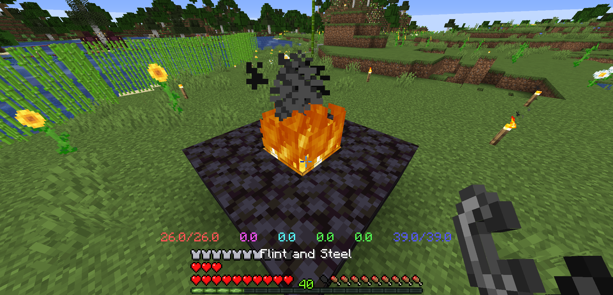

เข้าเกมมาครั้งแรกจะเจอกับระบบ Login, เราต้องพิมว่า /reg รหัสผ่าน
(โดยรหัสผ่านต้องเป็นตัวเลขเท่านั้น) พอเข้าเซิฟครั้งต่อๆมาต้องพิม /login รหัสผ่าน
Ex: /reg 54154, /login 54154
**เข้าเกมครั้งแรกถ้าถามว่า Yes No ตอนเข้าเซิฟกด Yes
กด shift ค้างเพื่อดู Level ของตัวเอง
ฆ่า Monster เพื่อเพิ่ม Level
ดาเมจจะเบาลงถ้า Level เราต่ำกว่าคนที่สู้ด้วย
Level จะผูกกับสายที่เราเล่นขณะนั้น เช่น ถ้าเวล 15 ดาบ พอเปลี่ยนไป Trident จะเวล 1
Level มากสุดตอนนี้คือ 20(เดี๋ยวค่อยเพิ่ม)
บอสจะเกิดทุก ๆ 40 นาที (ต้องรอคนเรียก)

ทุกๆคนจะสุ่มจำนวนเหล็ก/หินบอสที่ได้(ไม่แย่งกัน)
ยิ่งคนตีเยอะ ยิ่งมีโอกาสได้ของเยอะขึ้น
มีโอกาส 30% ที่จะได้จากบอส